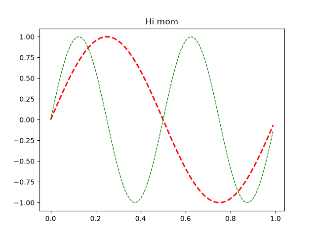

Note
Go to the end to download the full example code.
Set and get properties#
The pyplot interface allows you to use setp and getp to
set and get object properties respectively, as well as to do
introspection on the object.
Setting with setp#
To set the linestyle of a line to be dashed, you use setp:
If you want to know the valid types of arguments, you can provide the name of the property you want to set without a value:
>>> plt.setp(line, 'linestyle')
linestyle: {'-', '--', '-.', ':', '', (offset, on-off-seq), ...}
If you want to see all the properties that can be set, and their possible values, you can do:
>>> plt.setp(line)
setp operates on a single instance or a list of instances. If you
are in query mode introspecting the possible values, only the first
instance in the sequence is used. When actually setting values, all
the instances will be set. For example, suppose you have a list of
two lines, the following will make both lines thicker and red:
Getting with getp#
getp returns the value of a given attribute. You can use it to query
the value of a single attribute:
>>> plt.getp(line, 'linewidth')
0.5
or all the attribute/value pairs:
>>> plt.getp(line)
aa = True
alpha = 1.0
antialiased = True
c = b
clip_on = True
color = b
... long listing skipped ...
Aliases#
To reduce keystrokes in interactive mode, a number of properties have short aliases, e.g., 'lw' for 'linewidth' and 'mec' for 'markeredgecolor'. When calling set or get in introspection mode, these properties will be listed as 'fullname' or 'aliasname'.

Line setters
agg_filter: a filter function, which takes a (m, n, 3) float array and a dpi value, and returns a (m, n, 3) array and two offsets from the bottom left corner of the image
alpha: float or None
animated: bool
antialiased or aa: bool
clip_box: `~matplotlib.transforms.BboxBase` or None
clip_on: bool
clip_path: Patch or (Path, Transform) or None
color or c: :mpltype:`color`
dash_capstyle: `.CapStyle` or {'butt', 'projecting', 'round'}
dash_joinstyle: `.JoinStyle` or {'miter', 'round', 'bevel'}
dashes: sequence of floats (on/off ink in points) or (None, None)
data: (2, N) array or two 1D arrays
drawstyle or ds: {'default', 'steps', 'steps-pre', 'steps-mid', 'steps-post'}, default: 'default'
figure: `~matplotlib.figure.Figure` or `~matplotlib.figure.SubFigure`
fillstyle: {'full', 'left', 'right', 'bottom', 'top', 'none'}
gapcolor: :mpltype:`color` or None
gid: str
in_layout: bool
label: object
linestyle or ls: {'-', '--', '-.', ':', '', ...} or (offset, on-off-seq)
linewidth or lw: float
marker: marker style string, `~.path.Path` or `~.markers.MarkerStyle`
markeredgecolor or mec: :mpltype:`color`
markeredgewidth or mew: float
markerfacecolor or mfc: :mpltype:`color`
markerfacecoloralt or mfcalt: :mpltype:`color`
markersize or ms: float
markevery: None or int or (int, int) or slice or list[int] or float or (float, float) or list[bool]
mouseover: bool
path_effects: list of `.AbstractPathEffect`
picker: float or callable[[Artist, Event], tuple[bool, dict]]
pickradius: float
rasterized: bool
sketch_params: (scale: float, length: float, randomness: float)
snap: bool or None
solid_capstyle: `.CapStyle` or {'butt', 'projecting', 'round'}
solid_joinstyle: `.JoinStyle` or {'miter', 'round', 'bevel'}
transform: `~matplotlib.transforms.Transform`
url: str
visible: bool
xdata: 1D array
ydata: 1D array
zorder: float
Line getters
agg_filter = None
alpha = None
animated = False
antialiased or aa = True
bbox = Bbox(x0=0.0, y0=-1.0, x1=0.99, y1=1.0)
children = []
clip_box = TransformedBbox( Bbox(x0=0.0, y0=0.0, x1=1.0, ...
clip_on = True
clip_path = None
color or c = r
dash_capstyle = butt
dash_joinstyle = round
data = (array([0. , 0.01, 0.02, 0.03, 0.04, 0.05, 0.06, ...
drawstyle or ds = default
figure = Figure(640x480)
fillstyle = full
gapcolor = None
gid = None
in_layout = True
label = _child0
linestyle or ls = --
linewidth or lw = 2.0
marker = None
markeredgecolor or mec = r
markeredgewidth or mew = 1.0
markerfacecolor or mfc = r
markerfacecoloralt or mfcalt = none
markersize or ms = 6.0
markevery = None
mouseover = False
path = Path(array([[ 0.00000000e+00, 0.00000000e+00], ...
path_effects = []
picker = None
pickradius = 5
rasterized = False
sketch_params = None
snap = None
solid_capstyle = projecting
solid_joinstyle = round
tightbbox = Bbox(x0=80.0, y0=52.8, x1=571.04, y1=422.4)
transform = CompositeGenericTransform( TransformWrapper( ...
transformed_clip_path_and_affine = (None, None)
url = None
visible = True
window_extent = Bbox(x0=80.0, y0=-316.79999999999995, x1=571.04, y...
xdata = [0. 0.01 0.02 0.03 0.04 0.05]...
xydata = [[0. 0. ] [0.01 0.06279052] ...
ydata = [0. 0.06279052 0.12533323 0.18738131 0.248...
zorder = 2
Rectangle setters
agg_filter: a filter function, which takes a (m, n, 3) float array and a dpi value, and returns a (m, n, 3) array and two offsets from the bottom left corner of the image
alpha: float or None
angle: unknown
animated: bool
antialiased or aa: bool or None
bounds: (left, bottom, width, height)
capstyle: `.CapStyle` or {'butt', 'projecting', 'round'}
clip_box: `~matplotlib.transforms.BboxBase` or None
clip_on: bool
clip_path: Patch or (Path, Transform) or None
color: :mpltype:`color`
edgecolor or ec: :mpltype:`color` or None
edgegapcolor: :mpltype:`color` or None
facecolor or fc: :mpltype:`color` or None
figure: `~matplotlib.figure.Figure` or `~matplotlib.figure.SubFigure`
fill: bool
gid: str
hatch: {'/', '\\', '|', '-', '+', 'x', 'o', 'O', '.', '*'}
hatch_linewidth: unknown
hatchcolor: :mpltype:`color` or 'edge' or None
height: unknown
in_layout: bool
joinstyle: `.JoinStyle` or {'miter', 'round', 'bevel'}
label: object
linestyle or ls: {'-', '--', '-.', ':', '', ...} or (offset, on-off-seq)
linewidth or lw: float or None
mouseover: bool
path_effects: list of `.AbstractPathEffect`
picker: None or bool or float or callable
rasterized: bool
sketch_params: (scale: float, length: float, randomness: float)
snap: bool or None
transform: `~matplotlib.transforms.Transform`
url: str
visible: bool
width: unknown
x: unknown
xy: (float, float)
y: unknown
zorder: float
Rectangle getters
agg_filter = None
alpha = None
angle = 0.0
animated = False
antialiased or aa = True
bbox = Bbox(x0=0.0, y0=0.0, x1=1.0, y1=1.0)
capstyle = butt
center = [0.5 0.5]
children = []
clip_box = None
clip_on = True
clip_path = None
corners = [[0. 0.] [1. 0.] [1. 1.] [0. 1.]]
data_transform = BboxTransformTo( TransformedBbox( Bbox...
edgecolor or ec = (0.0, 0.0, 0.0, 0.0)
edgegapcolor = None
extents = Bbox(x0=80.0, y0=52.8, x1=576.0, y1=422.4)
facecolor or fc = (1.0, 1.0, 1.0, 1.0)
figure = Figure(640x480)
fill = True
gid = None
hatch = None
hatch_linewidth = 1.0
hatchcolor = (0.0, 0.0, 0.0, 1.0)
height = 1.0
in_layout = True
joinstyle = miter
label =
linestyle or ls = solid
linewidth or lw = 0.0
mouseover = False
patch_transform = CompositeGenericTransform( BboxTransformTo( ...
path = Path(array([[0., 0.], [1., 0.], [1.,...
path_effects = []
picker = None
rasterized = False
sketch_params = None
snap = None
tightbbox = Bbox(x0=80.0, y0=52.8, x1=576.0, y1=422.4)
transform = CompositeGenericTransform( CompositeGenericTra...
transformed_clip_path_and_affine = (None, None)
url = None
verts = [[ 80. 52.8] [576. 52.8] [576. 422.4] [ 80...
visible = True
width = 1.0
window_extent = Bbox(x0=80.0, y0=52.8, x1=576.0, y1=422.4)
x = 0.0
xy = (0.0, 0.0)
y = 0.0
zorder = 1
Text setters
agg_filter: a filter function, which takes a (m, n, 3) float array and a dpi value, and returns a (m, n, 3) array and two offsets from the bottom left corner of the image
alpha: float or None
animated: bool
antialiased: bool
backgroundcolor: :mpltype:`color`
bbox: dict with properties for `.FancyBboxPatch` or None
clip_box: `~matplotlib.transforms.BboxBase` or None
clip_on: bool
clip_path: Patch or (Path, Transform) or None
color or c: :mpltype:`color`
figure: `~matplotlib.figure.Figure` or `~matplotlib.figure.SubFigure`
fontfamily or family or fontname: {FONTNAME, 'serif', 'sans-serif', 'cursive', 'fantasy', 'monospace'}
fontfeatures: list of str, or tuple of str, or None
fontproperties or font or font_properties: `.font_manager.FontProperties` or `str` or `pathlib.Path`
fontsize or size: float or {'xx-small', 'x-small', 'small', 'medium', 'large', 'x-large', 'xx-large'}
fontstretch or stretch: {a numeric value in range 0-1000, 'ultra-condensed', 'extra-condensed', 'condensed', 'semi-condensed', 'normal', 'semi-expanded', 'expanded', 'extra-expanded', 'ultra-expanded'}
fontstyle or style: {'normal', 'italic', 'oblique'}
fontvariant or variant: {'normal', 'small-caps'}
fontweight or weight: {a numeric value in range 0-1000, 'ultralight', 'light', 'normal', 'regular', 'book', 'medium', 'roman', 'semibold', 'demibold', 'demi', 'bold', 'heavy', 'extra bold', 'black'}
gid: str
horizontalalignment or ha: {'left', 'center', 'right'}
in_layout: bool
label: object
language: str or None
linespacing: 'normal' or float, default: 'normal'
math_fontfamily: str
mouseover: bool
multialignment or ma: {'left', 'right', 'center'}
parse_math: bool
path_effects: list of `.AbstractPathEffect`
picker: None or bool or float or callable
position: (float, float)
rasterized: bool
rotation: float or {'vertical', 'horizontal'}
rotation_mode: {None, 'default', 'anchor', 'xtick', 'ytick'}
sketch_params: (scale: float, length: float, randomness: float)
snap: bool or None
text: object
transform: `~matplotlib.transforms.Transform`
transform_rotates_text: bool
url: str
usetex: bool, default: :rc:`text.usetex`
verticalalignment or va: {'baseline', 'bottom', 'center', 'center_baseline', 'top'}
visible: bool
wrap: bool
x: float
y: float
zorder: float
Text getters
agg_filter = None
alpha = None
animated = False
antialiased = True
bbox_patch = None
children = []
clip_box = None
clip_on = True
clip_path = None
color or c = black
figure = Figure(640x480)
fontfamily or family or fontname = ['sans-serif']
fontfeatures = None
fontname or name = DejaVu Sans
fontproperties or font or font_properties = sans\-serif:style=normal:variant=normal:weight=nor...
fontsize or size = 12.0
fontstyle or style = normal
fontvariant or variant = normal
fontweight or weight = normal
gid = None
horizontalalignment or ha = center
in_layout = True
label =
language = None
linespacing = normal
math_fontfamily = dejavusans
mouseover = False
parse_math = True
path_effects = []
picker = None
position = (0.5, 1.0)
rasterized = False
rotation = 0.0
rotation_mode = default
sketch_params = None
snap = None
stretch = normal
text = Hi mom
tightbbox = Bbox(x0=294.5, y0=426.7294270833333, x1=361.5, y1=...
transform = CompositeGenericTransform( BboxTransformTo( ...
transform_rotates_text = False
transformed_clip_path_and_affine = (None, None)
unitless_position = (0.5, 1.0)
url = None
usetex = False
verticalalignment or va = baseline
visible = True
window_extent = Bbox(x0=294.5, y0=426.7294270833333, x1=361.5, y1=...
wrap = False
zorder = 3
import matplotlib.pyplot as plt
import numpy as np
x = np.arange(0, 1.0, 0.01)
y1 = np.sin(2*np.pi*x)
y2 = np.sin(4*np.pi*x)
lines = plt.plot(x, y1, x, y2)
l1, l2 = lines
plt.setp(lines, linestyle='--') # set both to dashed
plt.setp(l1, linewidth=2, color='r') # line1 is thick and red
plt.setp(l2, linewidth=1, color='g') # line2 is thinner and green
print('Line setters')
plt.setp(l1)
print('Line getters')
plt.getp(l1)
print('Rectangle setters')
plt.setp(plt.gca().patch)
print('Rectangle getters')
plt.getp(plt.gca().patch)
t = plt.title('Hi mom')
print('Text setters')
plt.setp(t)
print('Text getters')
plt.getp(t)
plt.show()